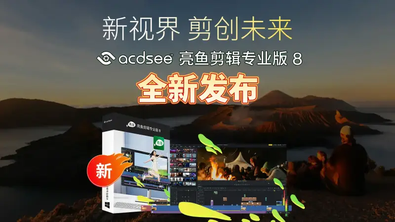
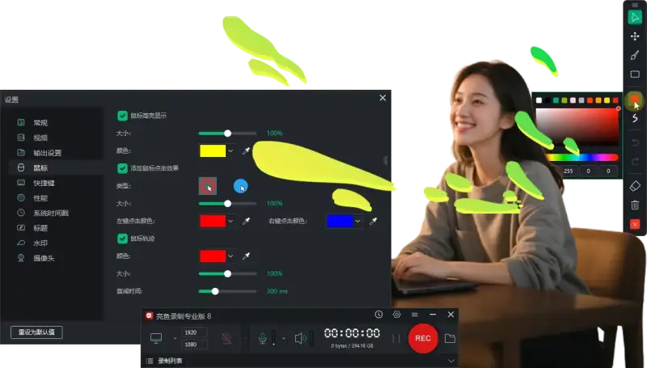
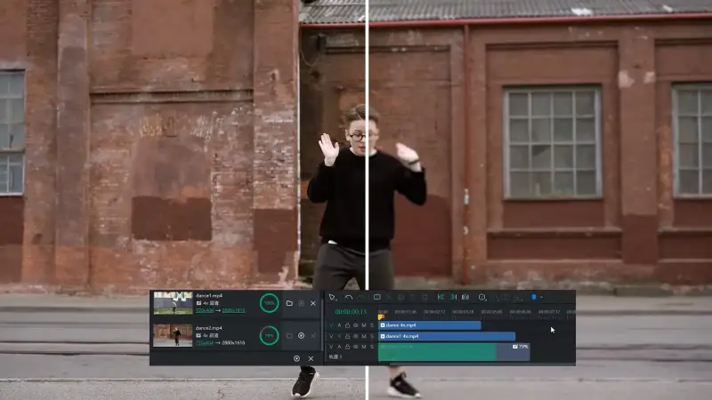
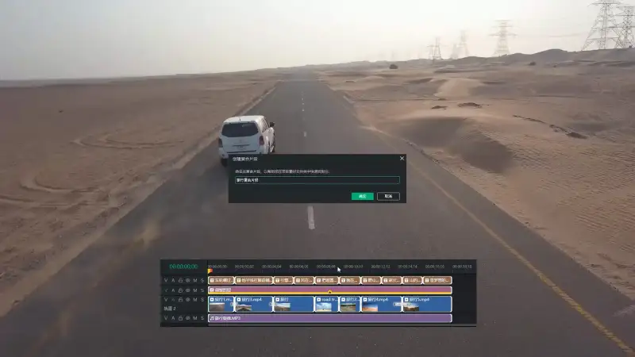
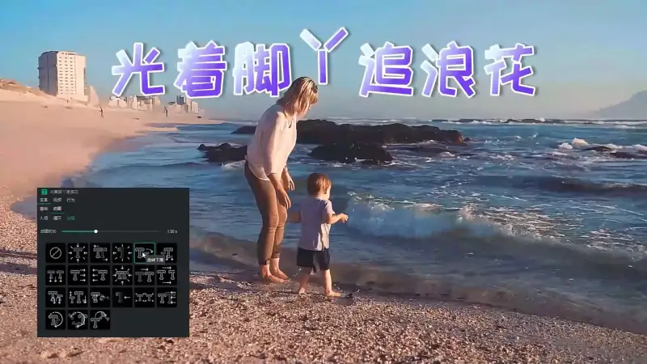

ACDSee, a leading brand in digital asset management and creative software, has released LightCut Pro 8. This professional video editing tool, built for content creators, uses disruptive real-time processing, AI-driven smart features, and workflow-wide optimization to break the performance limits of traditional editing software. Whether you are a professional editor, an e-commerce brand operator, or a social media creator, LightCut Pro 8 redefines the speed and creative ceiling of video creation.

Break through performance: From real-time recording to unlimited creation
The core of LightCut Pro 8 is its revolutionary real-time processing architecture. With an optimized codec engine, users can produce MP4 files directly with no render delay. This gives a smooth record-and-save experience. It supports high frame rates of 120 frames per second and long recording with no time limit. This meets the needs of e-sports live streaming and sports tracking, where image quality and smoothness matter most, and it lets creators capture every detail at a cinematic level.
Users can record the screen, the webcam, the microphone, and system audio at the same time. They can switch between portrait and landscape frames to fit different platforms, such as vertical short video and horizontal documentaries. With the real-time markup of the brush tool, they can add arrows, text, and sketches. A snapshot feature lets them take photos while recording, so the content is delivered more clearly and efficiently.

AI Reshapes Editing: From Tedious Steps to Smart Creation
LightCut Pro 8 deeply integrates AI and brings two core features: AI super-resolution and motion tracking. With AI super-resolution, you can raise low-resolution footage to 4K. Whether you restore old footage, work with mixed-quality source files, or enlarge a shot to catch the perfect frame, this smart upscaling raises clarity without losing quality. By analyzing the video and filling in details, AI makes the frame sharper, clearer, and steadier. Whatever the footage, you can break through the limits of video quality and keep the best visual result.

With AI-driven motion tracking, the focus stays locked on key elements. It locks text, effects, and graphics to a moving subject and keeps them in sync with the motion. You do not need to set keyframes by hand. The AI does the tracking for you. Whether you highlight a key moment of a person in a vlog, or bring out product details in an ad, add dynamic marks and animated stickers, or release striking effects, motion tracking greatly cuts the work of frame-by-frame adjustment and makes editing easy.
Compound clips and preset compound clips are another efficiency breakthrough. Users can save common editing combinations (such as title animation and transitions) as reusable compound clip presets, and apply them in one click in a new project. This saves time and effort. With the marker panel and fine keyframe control, creators can adjust the color and motion path of the frame in detail while keeping the project moving.

Take creativity further: Give work a professional feel
LightCut Pro 8 rebuilds the creative experience with a full text editing system. Under the Animation tab of Text Properties, a library of preset motion effects brings text to life. You can apply dozens of animations, such as slide, fade-in, and bounce, in one click, and make the subtitles the focus of the frame. The font set is fully upgraded. Many fonts pair with a smart gradient color system. From neon colors to ink-wash blending, each color combination can be tuned precisely by RGB values, HEX codes, or the opacity slider. The timeline supports batch text editing across tracks. When you select several subtitle clips, you can change the font, size, color, and even animation settings at the same time, and skip the repeated work.

With a single, transparent adjustment layer, you can apply effects and color correction to several clips at once. The clips on the tracks below get a unified enhancement, while the original frame stays untouched.
The built-in effects packs offer many free effects, including vertical packs such as movie, music, and camping themes. Users can drag them onto the timeline to build a design quickly.
Performance upgrade: Enjoy a smooth editing experience
Performance is greatly upgraded. Previewing 4K and 8K video is smoother, and the editing workflow flows better. Faster export, with hardware acceleration that uses the system's full power, makes creation flow smoothly. A new smart HDR-to-SDR conversion keeps the ideal image quality on any screen and fits the work for all kinds of playback.
LightCut Pro 8 holds to the idea that professional creation should be within reach. It keeps a user-friendly design: a simple, direct interface, a custom workspace, and detailed beginner tutorials, so even users with no base can learn the core features quickly. LightCut Pro 8 brings not only a technical breakthrough. Through free resource packs, AI assist tools, and a low price, it lets every creator release creative potential at the lowest cost. Starting now, users can log in to the ACDSee and LightCut websites to download and try it. It will bring creators a new video editing experience.